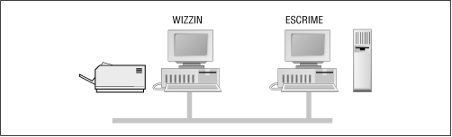

Using Samba
Robert Eckstein, David Collier-Brown, Peter Kelly1st Edition November 1999
1-56592-449-5, Order Number: 4495
416 pages, $34.95
|
|
Using SambaRobert Eckstein, David Collier-Brown, Peter Kelly1st Edition November 1999 1-56592-449-5, Order Number: 4495 416 pages, $34.95 |
3.3 An Introduction to SMB/CIFS
We'll wrap up this chapter with a short tutorial on SMB/CIFS. SMB/CIFS is the protocol that Windows 95/98 and NT machines use to communicate with the Samba server and each other. At a high level, the SMB protocol suite is relatively simple. It includes commands for all of the file and print operations that you might do on a local disk or printer, such as:
Each of these operations can be encoded into an SMB message and transmitted to and from a server. The original name SMB comes from their data format: these are versions of the standard DOS system-call data structures, or Server Message Blocks, redesigned for transmitting to another machine across a network.
3.3.1 SMB Format
Richard Sharpe of the Samba team defines SMB as a "request-response" protocol.[4] In effect, this means that a client sends an SMB request to a server, and the server sends an SMB response back to the client. Rarely does a server send a message that is not in response to a client.
[4] See http://anu.samba.org/cifs/docs/what-is-smb.html for Richard's excellent summary of SMB.
An SMB message is not as complex as you might think. Let's take a closer look at the internal structure of such a message. It can be broken down into two parts: the header, which is a fixed size, and the command string, whose size can vary dramatically based on the contents of the message.
3.3.1.1 SMB header format
Table 3.1 shows the format of an SMB header. SMB commands are not required to use all the fields in the SMB header. For example, when a client first attempts to connect to a server, it does not yet have a tree identifier (TID) value - one is assigned after it successfully connects - so a null TID (0xFFFF) is placed in its header field. Other fields may be padded with zeros when not used.
The fields of the SMB header are listed in Table 3.1.
Table 3.1: SMB Header Fields Field
Size (bytes)
Description
0xFF 'SMB'
1Protocol identifier
COM
1Command code, from 0x00 to 0xFF
RCLS
1Error class
REH
1Reserved
ERR
2Error code
REB
1Reserved
RES
14Reserved
TID
2Tree identifier; a unique ID for a resource in use by client
PID
2Caller process ID
UID
2User identifier
MID
2Multiplex identifier; used to route requests inside a process
3.3.1.2 SMB command format
Immediately after the header is a variable number of bytes that constitute an SMB command or reply. Each command, such as Open File (COM field identifier:
SMBopen) or Get Print Queue (SMBsplretq), has its own set of parameters and data. Like the SMB header fields, not all of the command fields need to be filled, depending on the specific command. For example, the Get Server Attributes (SMBdskattr) command sets the WCT and BCC fields to zero. The fields of the command segment are shown in Table 3.2.
Table 3.2: SMB Command Contents Field
Size in Bytes
Description
WCT
1Word count
VWVVariable
Parameter words (size given by WCT)
BCC
2Parameter byte count
DATAVariable
Data (size given by BCC)
Don't worry if you don't understand each of these fields; they are not necessary for using Samba at an administrator level. However, they do come in handy when debugging system messages. We will show you some of the more common SMB messages that clients and servers send using a modified version of tcpdump later in this section. (If you would like an SMB sniffer with a graphical interface, try "ethereal," which uses the GTK libraries; see the Samba homepage for more information on this tool.)
If you would like more information on each of the commands for the SMB protocol, see the SMB/CIFS documentation at ftp://ftp.microsoft.com/developr/drg/CIFS/.
3.3.1.3 SMB variations
The SMB protocol has been extended with new commands several times since its inception. Each new version is backwards compatible with the previous versions. This makes it quite possible for a LAN to have various clients and servers running different versions of the SMB protocol at once.
Table 3.3 outlines the major versions of the SMB protocol. Within each "dialect" of SMB are many sub-versions that include commands supporting particular releases of major operating systems. The ID string is used by clients and servers to determine what level of the protocol they will speak to each other.
Table 3.3: SMB Protocol Dialects Protocol Name
ID String
Used By
Core
PC NETWORK PROGRAM 1.0
Core Plus
MICROSOFT NETWORKS 1.03
LAN Manager 1.0
LANMAN1.0
LAN Manager 2.0
LM1.2X002
LAN Manager 2.1
LANMAN2.1
NT LAN Manager 1.0
NT LM 0.12Windows NT 4.0
Samba's NT LM 0.12
SambaSamba
Common Internet File System
CIFS 1.0Windows 2000
Samba implements the
NTLM0.12specification for NT LAN Manager 1.0. It is backwards compatible with all of the other SMB variants. The CIFS specification is, in reality, LAN Manager 0.12 with a few specific additions.3.3.2 SMB Clients and Servers
As mentioned earlier, SMB is a client/server protocol. In the purest sense, this means that a client sends a request to a server, which acts on the request and returns a reply. However, the client/server roles can often be reversed, sometimes within the context of a single SMB session. For example, consider the two Windows 95/98 computers in Figure 3.28. The computer named WIZZIN shares a printer to the network, and the computer named ESCRIME shares a disk directory. WIZZIN is in the client role when accessing ESCRIME's network drive, and in the server role when printing a job for ESCRIME.
Figure 3.28: Two computers that both have resources to share
This brings out an important point in Samba terminology:
Note that there are no implications as to the amount of resources that make up a server, or whether it has a large disk space or fast processor. A server could be an old 486 with a printer attached to it, or it could be an UltraSparc station with a 10 gigabyte disk service.
Microsoft Windows products have both the SMB client and server built in to the operating system. Wndows NT 4.0 uses a newer SMB protocol than Windows for Workgroups, and it offers an enhanced form of network security which will be discussed in Chapter 6. In addition, there are a large number of commercial SMB server products available from companies such as Sun, Compaq, SCO, Hewlett-Packard, Syntax, and IBM. Unfortunately, on the client side there are far fewer offerings, limited mainly to Digital Equipment's Pathworks product, and of course, Samba.
3.3.3 A Simple SMB Connection
Before we close this chapter, let's take a look at a simple SMB connection. This is some pretty technical data - which isn't really necessary to administer Samba - so you can skip over it if you like. We present this information largely as a way to help you get familiar with how the SMB protocol negotiates connections with other computers on the network.
There are four steps that the client and server must complete in order to establish a connection to a resource:
We will examine each of these steps through the eyes of a useful tool that we mentioned earlier: the modified tcpdump that is available from the Samba web site.
You can download this program at samba.org in the samba/ftp/tcpdump-smb directory; the latest version as of this writing is 3.4-5. Use this program as you would use the standard tcpdump application, but add the
-s 1500switch to ensure that you get the whole packet and not just the first few bytes.3.3.3.1 Establishing a virtual connection
When a user first makes a request to access a network disk or send a print job to a remote printer, NetBIOS takes care of making a connection at the session layer. The result is a bidirectional virtual channel between the client and server. In reality, there are only two messages that the client and server need to establish this connection. This is shown in the following example session request and response, as captured by tcpdump :
>>> NBT Packet NBT Session Request Flags=0x81000044 Destination=ESCRIME NameType=0x20 (Server) Source=WIZZIN NameType=0x00 (Workstation) >>> NBT Packet NBT Session Granted Flags=0x820000003.3.4 Negotiating the Protocol Variant
At this point, there is an open channel between the client and server. Next, the client sends a message to the server to negotiate an SMB protocol. As mentioned earlier, the client sets its tree identifier (TID) field to zero, since it does not yet know what TID to use. A tree identifier is a number that represents a connection to a share on a server.
The command in the message is
SMBnegprot, a request to negotiate a protocol variant that will be used for the entire session. Note that the client sends to the server a list of all of the variants that it can speak, not vice versa.The server responds to the
SMBnegprotrequest with an index into the list of variants that the client offered, starting with index 0, or with the value 0xFF if none of the protocol variants are acceptable. Continuing this example, the server responds with the value 5, which indicates that theNTLM0.12dialect will be used for the remainder of the session:>>> NBT Packet NBT Session Packet Flags=0x0 Length=154 SMB PACKET: SMBnegprot (REQUEST) SMB Command = 0x72 Error class = 0x0 Error code = 0 Flags1 = 0x0 Flags2 = 0x0 Tree ID = 0 Proc ID = 5371 UID = 0 MID = 385 Word Count = 0 Dialect=PC NETWORK PROGRAM 1.0 Dialect=MICROSOFT NETWORKS 3.0 Dialect=DOS LM1.2X002 Dialect=DOS LANMAN2.1 Dialect=Windows for Workgroups 3.1a Dialect=NT LM 0.12 >>> NBT Packet NBT Session Packet Flags=0x0 Length=69 SMB PACKET: SMBnegprot (REPLY) SMB Command = 0x72 Error class = 0x0 Error code = 0 Flags1 = 0x0 Flags2 = 0x1 Tree ID = 0 Proc ID = 5371 UID = 0 MID = 385 Word Count = 02 [000] 05 003.3.5 Set Session and Login Parameters
The next step is to transmit session and login parameters for the session. This includes the account name and password (if there is one), the workgroup name, the maximum size of data that can be transferred, and the number of pending requests that may be in the queue at any one time.
In the following example, the Session Setup command presented allows for an additional SMB command to be piggybacked onto it. The letter X at the end of the command name indicates this, and the hexadecimal code of the second command is given in the
Com2field. In this case the command is0x75, which is the Tree Connect and X command. TheSMBtconXmessage looks for the name of the resource in the smb_buf buffer. (This is the last field listed in the following request.) In this example, smb_buf contains the string\\ESCRIME\PUBLIC, which is the full pathname to a shared directory on node ESCRIME. Using the "and X" commands like this speeds up each transaction, since the server doesn't have to wait on the client to make a second request.Note that the TID is still zero. The server will provide a TID to the client once the session has been established and a connection has been made to the requested resource. In addition, note that the password is sent in the open. We can change this later using encrypted passwords:
>>> NBT Packet NBT Session Packet Flags=0x0 Length=139 SMB PACKET: SMBsesssetupX (REQUEST) SMB Command = 0x73 Error class = 0x0 Error code = 0 Flags1 = 0x10 Flags2 = 0x0 Tree ID = 0 Proc ID = 5371 UID = 1 MID = 385 Word Count = 13 Com2=0x75 Res1=0x0 Off2=106 MaxBuffer=2920 MaxMpx=2 VcNumber=0 SessionKey=0x1FF2 CaseInsensitivePasswordLength=1 CaseSensitivePasswordLength=1 Res=0x0 Capabilities=0x1 Pass1&Pass2&Account&Domain&OS&LanMan= KRISTIN PARKSTR Windows 4.0 Windows 4.0 PassLen=2 Passwd&Path&Device= smb_bcc=22 smb_buf[]=\\ESCRIME\PUBLIC3.3.6 Making Connection to a Resource
For the final step, the server returns a TID to the client, indicating that the user has been authorized access and that the resource is ready to be used. It also sets the ServiceType field to "A" to indicate that this is a file service. Available service types are:
The output is:
>>> NBT Packet NBT Session Packet Flags=0x0 Length=78 SMB PACKET: SMBsesssetupX (REPLY) SMB Command = 0x73 Error class = 0x0 Error code = 0 Flags1 = 0x80 Flags2 = 0x1 Tree ID = 121 Proc ID = 5371 UID = 1 MID = 385 Word Count = 3 Com2=0x75 Off2=68 Action=0x1 [000] Unix Samba 1.9.1 [010] PARKSTR SMB PACKET: SMBtconX (REPLY) (CHAINED) smbvwv[]= Com2=0xFF Off2=78 smbbuf[]= ServiceType=A:Now that a TID has been assigned, the client may issue any sort of command that it would use on a local disk drive. It can open files, read and write to them, delete them, create new files, search for filenames, and so on.
 |
 |
 |
| 3.2 Setting Up Windows NT 4.0 Computers |
 | 4. Disk Shares |
© 1999, O'Reilly & Associates, Inc.